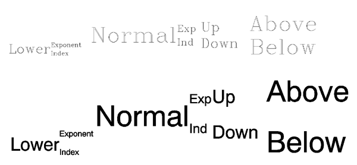
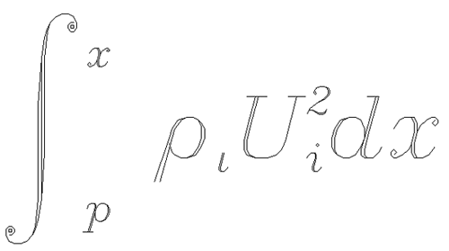
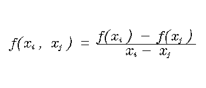
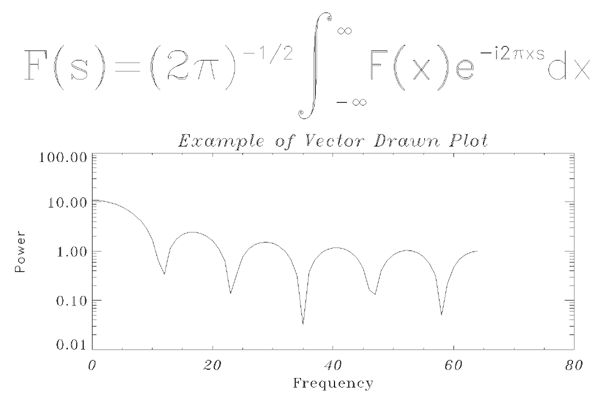

The figure below illustrates the relative positions and effects on character size of the level commands. In this figure, the word “Normal” positioned with the letters “ !N ” are normal level and size characters.
|
 |
The positioning shown was created with the following command:
XYOUTS, 0.1, 0.3, SIZE=3, $
'!LLower!S!EExponent!R!IIndex!N Normal' + $
'!S!EExp!R!IInd!N!S!U Up!R!D Down!N!S!A Above!R!B Below'
Embedded positioning commands and the Hershey vector font system can be used to create the integral shown below:
|
 |
The command string used to produce the integral is:
XYOUTS, 0, .2, $
'!MI!S!A!E!8x!R!B!Ip!N !7q!Ii!N!8U!S!E2!R!Ii!Ndx', $
SIZE = 3, /NORMAL
Remember that the case of the letter in an embedded command is not important. The string may be broken down into the following components:
Changes to the math set and draws the integral sign, uppercase I.
Saves the current position on the position stack.
Shifts above the division line and to the exponent level, switches to the Complex Italic font (Font 8), and draws the “ x .”
Restores the position to the position immediately after the integral sign, shifts below the division line to the index level, and draws the “ p .”
Returns to the normal level, advances one space, shifts to the Complex Greek font (Font 7), and draws the Greek letter rho, which is designated by “ q ” in this set.
Shifts to the index level and draws the “ i ” at the index level. Returns to the normal level.
Shifts to the Complex Italic font (Font 8) and outputs the upper case “ U .”
Saves the position and draws the exponent “2.”
Restores the position and draws the index “ i .”
Returns to the normal level and outputs “ dx .”
Note: The equation shown in the figure above could not be created so simply using the TrueType font system, because the large integral symbol is broken into two or more characters in the TrueType fonts.
Many equations contain fractional terms that have a line drawn between numerator and denominator. Using IDL’s PLOTS and XYOUTS routines can draw such a line, as shown in the figure below:
|
 |
The following code creates this example:
lhs = '!8f(x!S!Ii!R , x!S!Ij!R ) = !X'
XYOUTS, 0.1, 0.5, lhs, WIDTH = lhs_width, CHARSIZE = 2., /NORMAL
rhs = '!8!S!Af(x!S!Ii!R ) - f(x!S!Ij!R )!R!B x!S!Ii!R - $
x!S!Ij!R !X'
XYOUTS, 0.1 + lhs_width, 0.5, rhs, CHARSIZE = 2., $
WIDTH = rhs_width, /NORMAL
PLOTS, [0.1 + lhs_width, 0.1 + lhs_width + rhs_width], $
[0.51, 0.51], /NORMAL
IDL uses Hershey vector-drawn fonts when the value of the system variable !P.FONT is -1. This is the default condition. Initially, all characters are drawn using the Simplex Roman font (Font 3). When plotting, font changing commands may be embedded in the title strings keyword arguments (XTITLE, YTITLE, and TITLE) to select other fonts. For example, the following statement uses the Complex Roman font (Font 6) for the x -axis title:
PLOT, X, XTITLE = '!6X Axis Title'
This font remains in effect until explicitly changed. The order in which the annotations are drawn is main title, x -axis numbers, x -axis title, y -axis numbers, and y -axis title. Strings to be output also may contain embedded information selecting subscripting, superscripting, plus other features that facilitate equation formatting.
The following statements were used to produce the figure below. They serve as an example of a plot using Hershey vector-drawn characters and of equation formatting.
|
 |
; Define an array:
X = FLTARR(128)
; Make a step function:
X[30:40] = 1.0
; Take FFT and magnitude:
X = ABS(FFT(X, 1))
; Produce a log-linear plot. Use the Triplex Roman font for the
; x title (!17), Duplex Roman for the y title (!5), and Triplex
; Italic for the main title (!18). The position keyword is used to
; shrink the plotting window:
PLOT, X[0:64], /YLOG, XTITLE = '!17Frequency', $
YTITLE = '!5Power', $
TITLE = '!18Example of Vector Drawn Plot', $
POSITION = [.2, .2, .9, .6]
; String to produce equation:
SS = '!6F(s) = (2!4p)!e-1/2!n !mi!s!a!e!m' + STRING( "44b) $
+ '!r!b!i-!m' + STRING( "44b) + '!nF(x)e!e-i2!4p!3xs!ndx'
; Output string over plot. The NOCLIP keyword is needed because
; the previous plot caused the clipping region to shrink:
XYOUTS, 0.1, .75, SS, SIZE = 3, $
/NORMAL, /NOCLIP